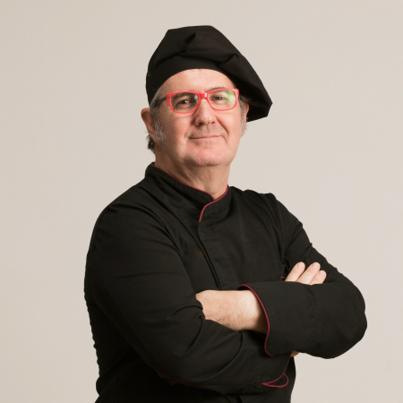

Italian cuisine – it is not just food, it's an art that characterizes the atmosphere of the country, it’s traditions and the spirit of national character.
About
Nikollo Pianti is a famous Italian chef and restaurateur. He is at position№1 among Top 10 chef in Italy. He’s the partner of Lusardi's, a 5-Michelin-star restaurant situated in Catanzaro, Italy. In August 2019 Lusardi's was positioned №1 in The World’s 50 Best Restaurants Awards, got top appraisals from Barilla, Sentura Bosso and Prosciutto Cotto association. Also Nikollo is a writer of 14 top rated cookery books with Italian recipes
N. Pianti brought up in the provincial town Ro in the North West. From childhood he got the chance to observe and learn the art of traditional Italian cooking, as his grandmother was a great cook. In 2018 Pianti was granted the Hospital Lifetime grant. Champs of this honor are praised for making critical obligations to the industry, which have had an outstanding effect, and act for the benefit of the progress of Italian cuisine.